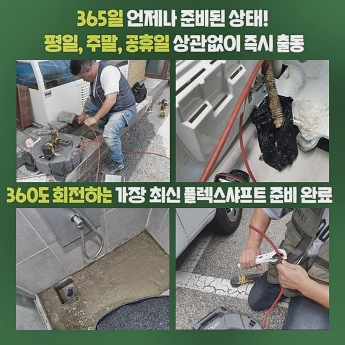
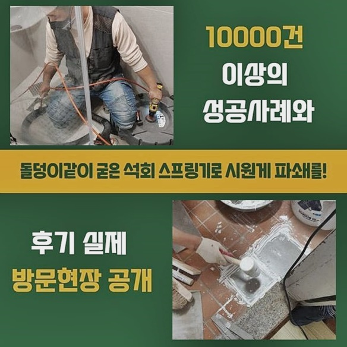
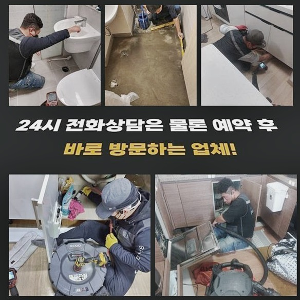
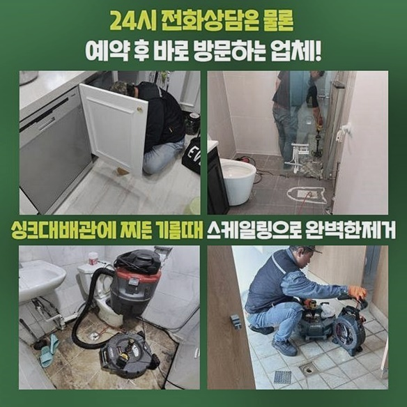
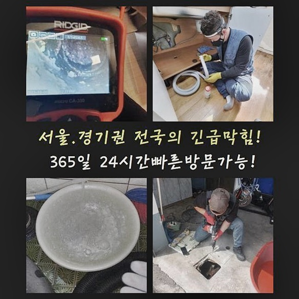
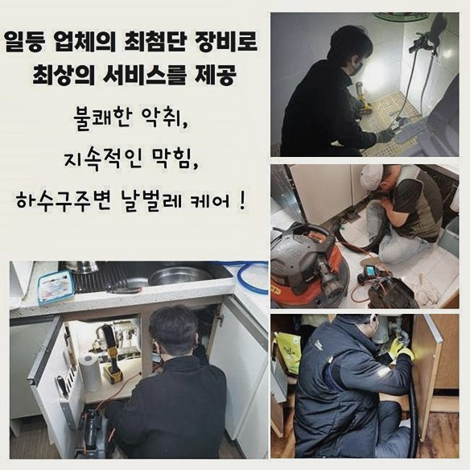

🏠 아산 용화동변기배관막힘 신창면 배관내시경카메라 누수공사
용인시 처인구 배관막힘 전문 시공 후기

📋 작업 개요
- 위치: 용인시 처인구, 수원시 영통구, 화성시 동탄
- 서비스 유형: 배관막힘, 누수수리, 고압세척, 내시경점검
- 작업 일시:
- 업체명: 하수구수사대 (010-5615-2118)
🔍 문제 상황
아산 용화동변기배관막힘 신창면 배관내시경카메라 누수공사
오수를 대량으로 쏟아내는 식당이라면 대개 물이 안빠지는 문제들을 경험하시죠
운영 시 식자재를 취급하며 기름기들이 배수관으로 배출되고 그것때문에 배수로가 막히게되고 효과가 있을법한 용품을 사용해 문제들이 완화되기도 하겠지만 며칠내에 막혀버릴 수 있어요
전문적인 배관 해결사들에게 전화해도 영업까지 스탑시켜야 되기에 그마저도 쉽지않죠
스스로의 힘으로 한시적으로나마 해결해도 같은 문제들이 생기게되니 이러한 사태를 방지하기위해서는 안정적인 해결책을 통해 조속히 수리해주는게 좋겠습니다
며칠전 조리공간에서는 하수들이 빠지질 않아 하루 일을 할 수 있는 상황이 아니라며 다급한 목소리로 연락주셨어요
저희도 빠르게 방문드려 배수관을 확인해주었어요
역류문제도 나타나면서 물빠짐은 물론 찌꺼기들도 솟구쳤어요
하수관에 이오수가 굳게되는 현상들이 심하다는 의미라고 볼 수 있죠 어디쪽에서 문제를 일으키는지 체크해봐야 문제들을 빠르게 시정할 수 있답니다
곧장 내시경장비를 삽입하여 어떤 양상으로 이뤄져있고 어느지점에 문제들이 심해진것인지 체크해보았어요
케이블이 얇은 탓에 내측에 슬러지들이 축적된 협소한 라인일지라도 적재적소 이용되요 배수관 내부엔 수직배관도 보았습니다
어디든지 무리없이 휘기때문에 갑자기 엘보부분도 세심히 확인가능해요

🔎 원인 분석
💡 전문가 진단: 정밀 진단 장비를 사용하여 슬러지의 고착 여부를 판명하고 타격/세척 작업을 실시했습니다.
조리공간에서 이용하던 하수구의 특성 상 눈으로 확인해도 기름슬러지와 이물질의 뭉치들로 범벅된 상황이였습니다
보아하니 고압수청소가 수행되어야 했습니다
고객분들이 질문을 주로 하시는 작업방식인 고압수청소는 저희업체가 조속히서 방문드려 문제를 찾아 점검단계를 거쳐서 설명하니 동의없이 고압의 청소를 진행시키는 사례는 우려하실 필요없다 말씀드립니다
집수라인도 정상이 아닌게 확실했기에 관로탐지장치들을 사용한 뒤 어느 배수구들이 말썽인건지 살폈는데요
하수관으로 내시경장비를 삽입하고서 탐지기장비를 운용해요
이 기계를 운용하여 문제의 부위를 인지하게 됩니다
약간의 거리들이 존재해도 밀어넣은 케이블로 거리감들을 파악했죠
반대로 집수시설까지는 설치된 형상이 길어 탐지기기를 사용해 문제 위치들을 특정시키는건데요
문제의 부위를 특정시키니 바깥부터 안쪽까지 막히게된 사실을 알게되었어요
지속적으로 통수오류가 불거지면서 문제들을 발현시킨 까닭은 외부 배수설비가 통수되지 못해서였습니다
기름뭉치가 진흙처럼 쏟아져 나왔습니다
기름자체를 많이 사용하고 있던 식당이므로 주거지와 비교할 수 없을만큼 상당량의 기름때들을 목격했어요
지속적으로 조리과정을 거치고 그릇들을 세척해줄 때라면 하수구로 이런저런 잔해가 배출되는것은 자연스러운 것인데요

🔧 작업 과정
막히는 양상이 발생되었을 때 이전에 조치들을 실행해준다면 장기간 사용할 수 있습니다
물빠짐이 예사롭지않다면 지속해서 관리해주셔야해요
마찬가지로 다양한 식자재를 많이 이용하던 장소일 때 온수를 하수관으로 배출시켜 다양한 식자재를 없애주어야 되겠으나 적절한 대처라고 볼 수 없죠
일차적으로 배수구의 기름기름때들을 제거해주고 안쪽부터 천천히 청소를 속행했는데요
이 과정에서는 샤프트장치기로 배수관으로 라인을 밀어넣어 사슬부가 돌면서 딱딱해진 오염물을 빨리 분쇄시키죠
이물질들은 체인쪽에 뒤엉키게되어 배출되게됩니다 고압분사를 버텨내지 못할정도로 내구성이 많이 떨어져있다면 샤프트장치기기를 사용해 이것과같은 결과를 만들어낼 수 있죠
안에와 더불어 밖의 시설물에도 막히는 양상이 양산된 모습으로서 전체적인 청소가 행해져야했죠
집수라인부터 내측까지 청소를 진행해준다면 슬러지가 순서대로 떨어져나가면서 배수공간들이 생겨나요
배수관으로 잔해가 상당하여 지속해서 샤프트도구 체인으로 기름성분을 제거했답니다
이전에 관로들을 이용하는 와중 냄새가 많이 발생했을텐데요 청소가 완료된다면 냄새들이 발생되는 상황은 걱정할 필요가 없어요
외부 배수관으로는 구경들도 넓으며 지속적으로 관리적 측면의 부재로 단단해진 잔해가 축적된 모습이였습니다
배수구로 뜰망을 써서 수도를 거르며 청소를 이어갔어요
이물이 세척되며 배수과정이 제대로 갖춰지며 다음으로는 이물제거가 훨씬 조속히 이루어졌어요 집수관로는 보통 가지배관에서 빠지는 하수들이 특정 위치에 모이게되어 배출되요
배수구로 전체 배관 중에서 한곳이라도 막혀버리게 될 시 타 부위도 심각하게 증세가 생겨납니다
지속해서 샤프트장치와 내시경기기를 사용한다음 관찰을 통한 세척합니다
내시경을 통해서 내부를 주시하며 놓치고있는 부분들이 없는것인지 확인해보기 수월하죠
배수관으로부터 밖으로 이어져있는 하수라인을 뚫기위하여 관로탐지장치들을 통해서 꼼꼼하게 조사하여 청소를 이행했어요
아무쪼록 구석까지 제거해주어 어려움없이 기름뭉치를 세척하는것이 용이했습니다
배수구로 메인설비도 설치된 형상이 더욱 복잡하기에 양 배관에서 기기들을 투입시켜 중간까지 청소를 속행했죠
실내관로에도 슬러지들이 없는것인지 내시경장치로 검수했죠 내시경기기로 관찰해보니 언제 그랬냐는 듯 이물하나없는 배관을 목격했죠


✅ 작업 완료
끝으로 하수라인으로 하수들이 배출되는지 체크해봐요
제대로 빠지는지 확인을 이행해보니 배수구로 막힘없이 내려갔어요 요식업의 경우에는 기름들이나 음식물을 취급하므로 배수로가 막히게 됩니다
배수관으로 원인을 제대로 제거시키고 거름망들을 설치하고 일상중에 오수를 배출시키는 시점에도 주의해주셔야 해요
또한 주기적으로 점검을 거치면 배수관이 이상을 보이지않고 이용하실 수 있죠
배수관으로 이상이 발생했을 시 시간에 관계없이 의뢰를 맡겨보세요!



⚠️ 하수구 배관 막힘 예방 및 관리 가이드
- ✅ 머리카락, 비닐, 물티슈 등 물에 분해되지 않는 이물질은 절대 흘려보내지 마세요.
- ✅ 기름기 많은 식기는 설거지 전 키친타올로 먼저 기름때를 닦아내세요.
- ✅ 주기적으로 배수구에 뜨거운 물을 가득 부어주어 유지방 고착을 방지하세요.
- ✅ 작업 후 1년 이내 재발 시 무상 A/S 보증 서비스를 제공합니다.
💡 핵심 정리
- 확실한 장비 작업(내시경 점검 및 샤프트 스케일링)으로 원인을 뿌리 뽑습니다.
- 작업 후 1년 이내에 동일한 부위 재발 시 100% 무상 A/S 서비스를 보장합니다.
- 서울 · 경기 · 인천 전 지역에 24시간 언제든 긴급 출동할 수 있도록 항시 대기 중입니다.
❓ 자주 묻는 질문 (FAQ)
🚨 용인시 처인구 배관막힘 문제로 고민이신가요?
정확한 원인 진단과 확실한 시공으로 재발 없는 해결을 약속드립니다.
24시간 긴급 출동 | 서울 · 경기 · 인천 전지역 | 1년 내 재발 시 무상 A/S